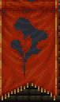
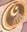
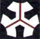
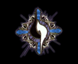
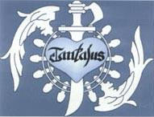

Characters
Characters Places
Places Stories
Stories Species
Species Organizations
Organizations Glossary
Glossary Transportation
Transportation Monsters
Monsters Jobs
Jobs Summons
Summons Items
Items Magic/Skills
Magic/Skills Weapon Types
Weapon Types In-Crossovers
In-Crossovers Ex-Crossovers
Ex-Crossovers Release Dates
Release Dates Name Origins
Name Origins Famous Moments
Famous Moments Music Database
Music Database Features
Features Game Help
Game Help Game Evolution
Game Evolution Square Art
Square Art Fan Flash
Fan Flash Final Fantasy Forums
Final Fantasy Forums Updates
Updates Site Info
Site Info Feedback
Feedback Full Index
Full Index Links
Links Staff
Staffor·gan·ize / v. 1. Give an orderly structure to; systematize. 2. Initiate; arrange for. 3. Enlist (a person or group) in a trade union, political party, etc. [L, related to ORGAN]
Sometimes it's just tough to get everyone straight. Who's at the head of the Empire? What's the point of SeeD? All the groups and their purposes and details are explained here. Note that for 1, 3, and 5 there are basically no organizations at all. *^_^*
- Archadian Empire (12)
- CP: The mightiest sovereign state in Valendia. Originally a republic governed by an active senate, the rise of the military brought about the shift to an imperial system 200 years ago. With the change in governance, Archadia began invading its neighboring lands, quickly becoming the largest realm in Ivalice.
While in the past the emperor was traditionally of military extraction, a purge of key figures in the military by the politically powerful House Solidor led to the installation of a line of Solidor emperors which continues to this day. - AVALANCHE (7)
- The name given by Barret to his few but hardy rebels. They think that Shinra's draining of Mako must be stopped before the Planet dies. They use terrorist activities (bombing reactors) to announce their intentions. The members of AVALANCHE are: Barret Wallace, the headstrong leader; Biggs, a martial arts expert; Wedge, a disguise and explosives expert; Jessie, an electronics expert; and Tifa, who runs 7th Heaven, the bar serving as AVALANCHE headquarters in Midgar's Sector 7. AVALANCHE hires Cloud Strife as a mercernary to their cause, but their cause quickly becomes overshadowed by the urgency of Sephiroth's plans.
- Centurio, Clan (12)
- The monster hunting clan Vaan belongs to, based out of Rabanastre. Led by Montblanc, its members include Bansat, Monid, Krjn, and Ma'kenroh.
- Chocobo Knights (10)
- This cadre of three fighters (Lucil, Elma, and Clasko) are part of the Crusaders, and are generally charged with guarding the Mi'ihen Highroad and its extensions on their chocobo steeds. They don't seem to be much use, though. 8-)
- Corpse Brigade (Tactics), Death Corps (PSX)
- An anti-aristocratic terrorist group run by Wiegraf and Gustav. The successor to the Knights of Death. Milleuda and Gragoroth are also members.
- Crusaders (10)
- These soldiers are dedicated to fighting Sin. Originally started by Lord Mi'ihen and declaimed as blasphemous by the Yevon Church, Mi'ihen successfully defended his organization and it was actually adopted as a branch of Yevon and its name changed to the Crusaders. Lately, though, they don't usually have the blessing of the Yevon Church. They tend to take any possible method of attacking, even allying with the Al Bhed's machina, which the church frowns upon. Originally started by a man called Mi'ihen, the current crusaders include Luzzu and his protege Gatta.
- Dalmasca, Kingdom of (12)
- CP: A small kingdom comprising the lands around the city of Rabanastre, governing a portion of the Galtean Peninsula. While its territories are small, its situation at the crossroads of three continents has enabled it to prosper as a center for trade. More than 700 years are marked in the charts of history since her founding, yet many are the armies that have sought to claim her for her cultural richness and strategic importance. Upon her defeat to Archadia in the invasion of 704, her lands were placed under the direct control of the Empire.
- Deepground (DoC)
- Originally a hospital for SOLDIER, the former President Shinra, Heidigger, Scarlet, and Hojo used it as a secret lab to create powerful Mako-irradiated warriors. The elite of this group is called the Tsviets. Their headquarters is far beneath Mako Reactor 0 in Midgar. Deepground soldiers require Mako to survive, and are immediately noticeable by their blue glowing uniforms.
- Duelhorn (TA2)
- A clan from the far east which arrives in Jylland to try and expand its control. Its four leaders are Maquis, Alys the Ensorceled, Duke Snakheart, and the Night Dancer. They clash with both Clan Gully and Khamja throughout the game, although they don't feature in any required story missions.
- Empire (6)
- A corrupt force ruled by Emperor Gestahl. The truth is that there isn't too much actual governing done by the Empire; they just go ahead and take what they want by force. Gestahl's ultimate goal is world domination, of course; he plans to use Magitek to do it. After gaining new information, he changes his plan to Magicite and then the three Statues. Other notables in the Empire: Kefka, Gestahl's deranged right-hand man, who eventually kills him and ends the Empire for good; General Leo, the honorable soldier betrayed by the Empire in the end; General Celes, another honorable soldier who defects to the Returners; and Cid, the genius behind Magitek technology.

Flag of the Empire. - Esthar (8)
- An almost-mythical city-state in the east was controlled by Sorceress Adel, who forced them to wage war on most of the known world, most significantly Galbadia. After Laguna's clever defeat of Adel, they appointed him as President and began the slow road to recovery. Their technology is astounding - they even have a complete lunar base in outer space!

Emblem of Esthar. - Forest Owls (8)
- One of the myriad organizations in Timber fighting for its fredom from the oppresive Galbadian regime. Rinoa, Zone, and Watts are basically the only members. 8p
- Galbadia (8)
- Originally this large "democracy" (actually a dictatorship in disguise) fought the forces of Esthar's Sorceress Adel tooth and nail. Laguna and his friends were actually part of the army. However, in Squall's time, Galbadia itself, through its President Deling, allied itself with the new Sorceress Edea, switching its role. Even after Edea was overthrown, they rallied under Seifer, who acted for Sorceress Ultimecia. They have advanced military technology, including a missile base.

Galbadia Flag - Glabados Church (Tactics)
- The religion started by Saint Ajora 1200 years earlier. The Knights Templar are their main fighting force.
- Gully, Clan (TA2)
- The clan Luso is initiated in, led by Cid.
- Gullwings (X-2)
- Sphere hunters extraordinaire, aka the good guys. Consists of Yuna, Rikku, Paine, Brother, Buddy, Shinra, and their Barkeep. At first they're just easygoing sphere hunters, then they decide to charge to help the public good, and finally they end up back where they started as selfless hero-types. Based in the airship Celsius.
- Khamja (Tactics, TA2), Kamyuja (Tactics-PSX)
- An elite assassination group led by Grand Duke Gerrith Barrington during the Fifty Year War. Its active heads were Marach and Rapha Galthena, but the Kamyuja was disbanded after the War, when Barrington began to get even more ambitious.
Khamja plays a much larger role in TA2; however, this obviously isn't the same organization. TA2's Khamja is a clan dedicated to controlling as much of Ivalice as possible, often by criminal means, often via their puppet corporation, Carm Mercantile. The big baddies of the game mainly come from Khamja, including Ewen and Illua, neither of which are actually Khamja's leaders. - Kiltia (12)
- CP: Religion begun by the prophet Kiltia over two millenia ago. The religion of the Ordalian peoples is a dualist system - a polytheistic pantheon with the God of Light, Faram the Father, at its head.
After embarking on a pilgrimage to proselytize and deliver the word of the vision he had seen to the people, Kiltia came to Mr. Bur-Omisace, and from there his teachings spread. The Light of Kiltia, as his teachings were called, continued even after his death, until they covered all Ivalice. Though the followers and churches of Kiltia are spread far and wide, they do not interfere in affairs of state or governance.
Though at one point the church held considerable influence, they willingly discarded their power, fearing oppression. Ever since, church officials with the rank of celebrant or higher have been forbidden from participating in statecraft. In addition, Mt. Bur-Omisace maintains a mutual non-incursion policy with the surrounding territories. Several years after Kiltia's founding, Saint Ajora began a new teaching, claiming that Faram alone was the one true god, the popularity of this new sect further lessening the power of the Light. - Knights Of Death (Tactics)
- An anti-aristocratic terrorist group active during the Fifty Year War. Its successor is the Corpse Brigade.
- Knights of Pluto (9)
- An elite (well, supposedly) bunch of Alexandrian male knights, led by Adelbert Steiner, whose sole purpose is to protect the body of the queen and princess. They're good at specific things, but dismal in professionalism.
- Leblanc Syndicate (X-2)
- A group of sphere hunters who tend not to play by the rules very much, run by the amazingly annoying Leblanc and her two cronies, Logos and Ormi. They have apparently unlimited grunts, as evidenced by the sheer number of them you can kill in battles. They're based in Guadosalam.
- Lucavi (Tactics)
- A race of powerful demons whose link to our world is the Holy Stones. They assosciate with the holder of the Stones and allow the holder to assume the shape of the demon. The new demon is called a Zodiac Brave. Zodiac Braves can switch between human and demon shape at will. Lucavi which appear in the game include Belias (assosciated with Wiegraf and the Aries Stone), Cuchulainn (Draclau and Scorpio), Zarela (Elmdore and Gemini), Adrammelech (Dycedarg and Capricorn), Hashmal (Folmarv and Leo), and Ultima (St. Ajora and Virgo).
- Machine Faction (X-2)
- An Al Bhed group run by Gippal who concentrate on building new machines from old parts found in excavations in the Bikanel Desert. Its headquarters are in Djose Temple.
- Nabradia, Kingdom of (12)
- A land neighboring Dalmasca, both kingdoms being founded by the bloodline of the Dynast-King, who first unified Ivalice under one rule. Graced with beautiful leandscapes and rich natural resources, Nabradia prospered for many years as a center of both agriculture and industry. Two years ago, an internal struggle boiled over into civil war, this opening the door to the Archadian invasion of Nabradia. Several days after the beginning of the siege of Nabudis, a mysterious explosion consumed the city, leaving a smoking ruin where the political and cultural heart of Nabradia once stood, and sounding the death-knell for the kingdom.
- New Yevon (X-2)
- After the defeat of Sin, a man named Trema remade Yevon as New Yevon. Trema's personal goal was to gather old spheres and destroy them, and after having largely achieved that, he disappeared. His secrets were given to the subsequent leader, a young man named Baralai who aimed more towards "user-friendliness" in the temples - but still refused to give up the secrets. Barthello is also a member of the group, which is based in Bevelle.
- Nutsy, Clan (TA)
- The clan Marche belongs to, led by Montblanc.
- Order of the Northern Sky (Tactics), Hokuten Knights(PSX)
- The soldier force of Prince Larg; first led by Barbaneth Beoulve, then by his second son Zalbaag. Ramza, Delita, and Argath start out as Hokuten cadets.
- Order of the Southern Sky (Tactics), Nanten Knights (PSX)
- The soldier force of Prince Goltanna. The Black Sheep, headed by Baron Grims and which Delita joins briefly, is a part of them. Headed for decades by Orlandeau, he is deposed during the War of the Lions and Delita takes over control of the Nanten.
- Paramecia Empire (2)
- The super-evil monopoly which THINKS it's trying to take over the world... until its Emperor gets an epiphany and decides to destroy it instead, signing a pact with the devil to further his goal. The Dark Knight is a high-ranking official who usurps the Empire after the Emperor's death, but it upsets his plans a bit when the Emperor returns again. Borghen was a traitor who betrayed Fynn to the Empire; he was in charge of building the Warship at Bafsk until he perished in a battle with the heroes.
- Prima Donna (TA2)
- One of the more notable clans, this is staffed by four beauties: Mayhew, Aluette, Lili, and Valentyne. They double as a popular band (complete with groupies), and feature in several side missions.
- Red Wings (4)
- The elite airship force of Baron Castle. Cecil headed this until the king of Baron (aka Cagnazzo) deposed him and elected Golbez as their head. Golbez began looting and pillaging places to gain their Crystals in the name of Baron. This farce didn't last too long; Golbez lost the pretense of the Red Wings fairly early. The name comes from Luke Skywalker's fleet in the first Star Wars movie.
- Resistance (12)
- An anti-Archadian force gathered by Marquis Ondore of Bhujerba. Cadres of Resistance fighters are everywhere in Dalmasca and Archadia; two leaders include Vossler of Dalmasca and Havharo of Bhujerba. Eventually the Resistance allies with Rozarria in its fight against Archadia. Ashe spends the last part of the game trying to stop the Resistance from fighting Archadia - though she of all people wants to see Archadia fall.
- Returners (6)
- A bunch of soldiers led by Banon intent on rebelling against the Empire. They don't stand a chance, of course - that is, until they happen upon the windfall of Terra and her powers. As Kefka's madness grows, the Returners slowly fade into the background of the story. The other Returners of note are Arvis, the old man from Narshe who saves Terra from the Imperial soldiers, and Locke, the young thief who also saves her from Imperial soldiers. 8-)
- Rozarrian Empire (12)
- CP: Empire located in the west of Ordalia, possessing an army rumored to be the equal of the Archadian Imperial forces. Though an emperor rules, Rozarria is a military state, and the armed forces carry much political power.
In recent years, the Margrace Imperial family has sought to limit the military's power, embarking on a series of reforms to restrict the scope of their authority. Archadia's unprovoked invasion of Dalmasca sent shockwaves through the Rozarrian establishment, and many are those who see a war between empires looming on the horizon. - Ryomoku (Tactics)
- A band of ex-knights set on stirring up unrest while the White and Black Lions duke it out. The Ryomoku completely wiped out the Blackram Knights (a divison of the Order of the Southern Sky under Baron Grims). This left Delita, who was a part of the Blackram Knights, to manipulate the war as he saw fit.
- SeeD (8)
- An elite mercenary service. Becoming a SeeD is a great honor. To do so, a student must be enrolled in a Garden (which only accepts students between the ages of 5 and 15) until they're ready to take both a written test and a field test. After passing both, they become SeeDs and are dispatched all over the globe to the highest bidder. SeeDs use para-magic and Guardian Forces to their greatest advantage. The original purpose of SeeD, which was invented by Cid Kramer, was to be prepared for the coming of the sorceress, but due to pressure from NORG, who financed the Gardens, they became mercenaries in the meantime... eventually forgetting their true purpose.

Logo of SeeD. - Shinra (7)
- A huge monopoly of a corporation to the nth extreme. Shinra has grown into an all-encompassing entity in the world. They leave their trademarks in the form of Mako Reactors throughout the world. Their main headquarters is in Midgar City, which is run by no less than eight Mako Reactors; the giant Shinra HQ is above the city. Notables in Shinra: President Shinra, a pompous old man whose greed eventually gets him killed; Vice-President Rufus, President Shinra's son, who takes over after his death (although not as power-hungry as his father, he's a much more cold-blooded customer); Reeve, the head of Urban Development who's sympathetic (but not sympathetic enough) to AVALANCHE; Heidigger, the head of the Turks; Scarlet, the weapons-crazy military adviser who gets Shinra what they want at any price; Hojo, the fractured genius in charge of the science program; and Palmer, the roly-poly, incompetent head of the Space Program.
Logo of Shinra. - Sphere Hunters (X-2)
- The umbrella name for several groups of people who go around Spira looking for old spheres and selling them to the highest bidder. The Gullwings and the Leblanc Syndicate are two examples.
- Tantalus (9)
- A combination theater troupe and bandit gang. The hearty Baku is the leader of this good-natured bunch, whose ranks include Zidane, Blank, Marcus, Cinna, Ruby, and the three Nero brothers (Benero, Zenero, and Genero). Although some of their actions are a bit below the law, their ends justify their means.

Logo of Tantalus. - Tsviets (DoC)
- The elite of Deepground; all of them are cold-blooded (or hot-blooded) killers with far greater powers than run-of-the-mill Deepground soldiers. Headed by Weiss the Immaculate, the other members are Azul the Cerulean, Rosso the Crimson, Nero the Sable, and Shelke the Transparent.
- Turks (7)
- Shinra's specialized infiltration service. They're a cross between the Goodfellas and James Bond wannabes. Their purpose is to get all the dirty stuff done - kidnappings, murders, thefts - that Shinra doesn't want known about. The members of the Turks are: Tseng, the quiet head of the Turks; Reno, the redheaded, jaded second-in-command; Rude, the bald, silent sidekick; and Elena, the enthusiastic newbie. Vincent was a former member as well.
- White SeeDs (8)
- A group of SeeDs trained by Edea personally. Their job is to protect Ellone if and when Edea is taken over by Ultimecia. They travel around the world on an old-fashioned sailing ship. Zone and Watts end up with them, too.
- World Regenesis Organization (DoC)
- The WRO was created after Meteorfall, financed by an unknown organization, and helmed by Reeve Tuesti. Its mandate is to protect the planet and help its healing process. Shalua Rui and Yuffie Kisaragi are two high-profile members.
- Yevonites (10)
- The church of Yevon purportedly spreads his teachings - in fact, the Yevonites were formed because of their fear of Yu Yevon, hiding out inside Sin and destroying things. Like all religious infrastructures in RPGs, this one is rife with corruption, is run by dead people (literally), and goes against its own teachings.
- Youth League (X-2)
- A brash antiestablishment movement spearheaded by Meyvn Nooj and based in Kilika. Its constituents are mainly young and tend to be nasty. They constantly clash with New Yevon. Members include Dona and the entire former Chocobo Knights.

Symbol of Yevon. - Zodiac Braves (Tactics)
- See Lucavi.
White Lion flag of the Order of the Northern Sky.
Black Lion flag of the Order of the Southern Sky.
Final Fantasy, all games and animation bearing the Final Fantasy name, and all characters in said games or animation are copyright their respective creators, including but not limited to Squaresoft, Square Enix, Square EA, Tokyo TV, and ADV Films.